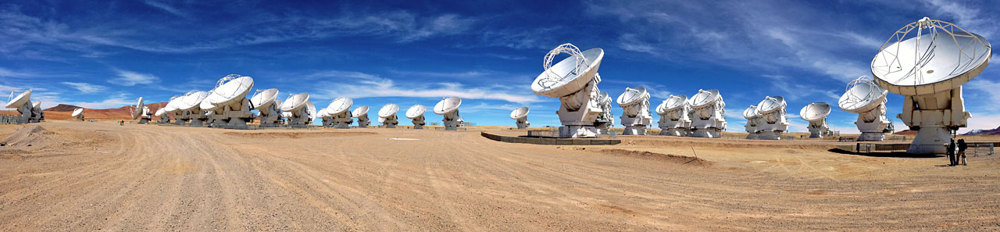

Submillimeter astronomy is the branch of observational astronomy conducted at wavelengths between roughly 0.1 mm and 1 mm, sitting between the far-infrared and microwave bands of the electromagnetic spectrum. These wavelengths, about a thousand times longer than visible light, reveal cold, dust-shrouded regions of the universe that are largely invisible at optical wavelengths. About half of all starlight emitted over cosmic history has been absorbed by interstellar dust and re-emitted as thermal radiation peaking in the far-infrared and submillimeter range.

Cold objects such as molecular clouds, protostellar cores at 10–50 K, and protoplanetary disks emit most of their light at submillimeter wavelengths. Submillimeter observations can peer through optically thick dust that blocks visible and ultraviolet light, making them essential for studying star formation. At high redshift, a useful quirk called the negative K-correction keeps dusty galaxies roughly equally bright in the submillimeter out to redshift z ≈ 6, because the thermal dust peak redshifts into the observing band as the galaxy moves further away.
Key Science
Rotational lines of carbon monoxide (CO) are the primary tracer of molecular hydrogen and star-forming gas. Dust continuum emission maps the column density and temperature of star-forming regions. In 2014, ALMA resolved rings and gaps in the protoplanetary disk of HL Tauri, directly revealing structures carved by forming planets. Submillimeter surveys with SCUBA on the James Clerk Maxwell Telescope (JCMT) in 1997–1998 discovered submillimeter galaxies (SMGs), a population of dust-obscured starbursts at high redshift forming stars at rates of hundreds to thousands of solar masses per year. The Event Horizon Telescope, a global submillimeter Very Long Baseline Interferometry (VLBI) network operating at 1.3 mm and 870 µm, produced the first direct images of black holes: M87* in 2019 and Sgr A* in 2022.
Atmospheric Challenges
Water vapour is the main enemy of ground-based submillimeter astronomy. Even a few millimetres of precipitable water vapour can block observations, so telescopes are built at high, dry sites. The best locations include the Chajnantor plateau in Chile (5,000 m), Mauna Kea in Hawaii (~4,200 m), and the South Pole. Observations are limited to narrow atmospheric windows near 350, 450, and 850 µm and around 1.1–1.3 mm. Space missions like the Herschel Space Observatory (2009–2013) and balloon experiments avoid the atmosphere entirely.
Major Observatories
The JCMT, a 15 m single-dish telescope on Mauna Kea, has been operational since 1987 and remains the world's largest dedicated submillimeter telescope. Its SCUBA-2 camera has 5,120 pixels at both 450 and 850 µm. ALMA, on the Chajnantor plateau, combines 66 antennas (54 × 12 m and 12 × 7 m) with baselines up to 14 km, achieving an angular resolution of 10 milliarcseconds across wavelengths from 0.32 to 3.6 mm. Other facilities include the Submillimeter Array (SMA) on Mauna Kea and the APEX 12 m dish on Chajnantor.